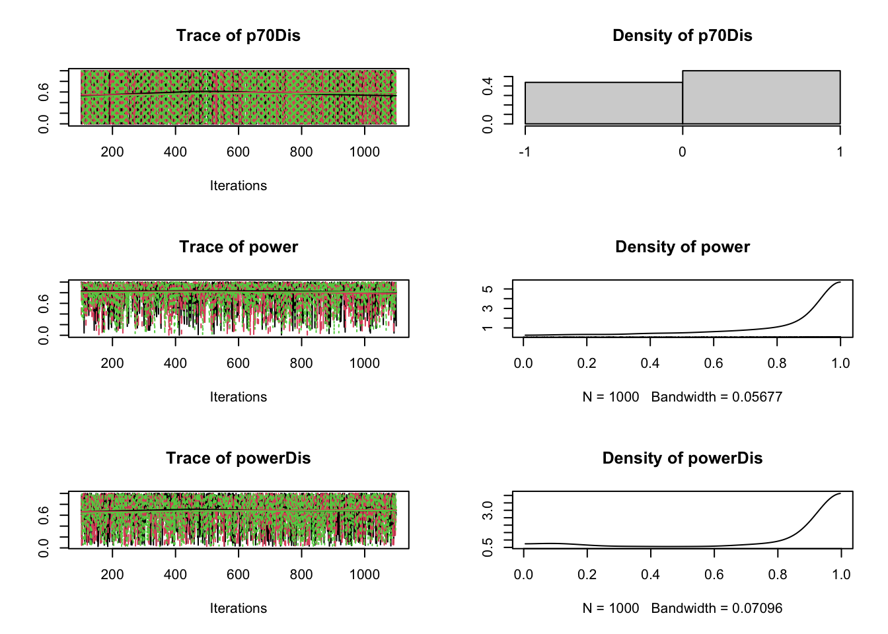
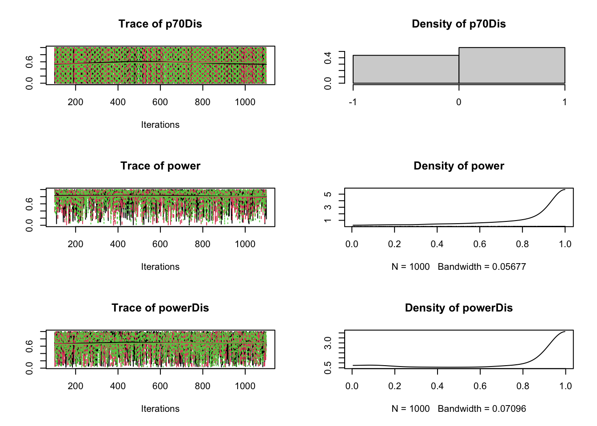

11 Class 11: Prior distributions
Example 11.1 (Power analysis) We consider the sample size estimation of a two-arm randomized trial with a continuous primary outcome and \(n\) subjects randomized to each arm. Assuming a normal distribution of the primary outcome and a common within-treatment standard deviation of \(\sigma\), the estimated treatment effect is assumed to have a \(\mathcal{N}(\theta,2\sigma^2/n)\) distribution. Thus, the sample size determination is found to be \[ n=\frac{2\sigma^2}{\theta^2}\left(z_{1-\alpha/2}+z_{1-\beta}\right)^2, \] where \(z_p=\Phi^{-1}(p)\). Solving for \(1-\beta\) gives \[ \text{Power}=\Phi\left(\sqrt{\frac{n\theta^2}{2\sigma^2}}-z_{1-\alpha/2}\right). \] Supposing historical data suggests \(\theta\) likely (interpreted as 1 standard deviation) to be between 3 and 7 suggests the prior \(\theta\sim\mathcal{N}(5,2^2)\). The parameter \(\sigma\) is estimated to be around 10 and based on around 40 observations. This leads to a \(\mathrm{GammaSR}(a,b)\) prior for \(\tau=1/\sigma^2\) with \(a/b=1/10^2\) and \(2a=40\); i.e. \(\tau\sim\mathrm{GammaSR}(20,2000)\). Another set of priors are considered: the prior for \(\sigma\) is assumed to be based on 20 observations instead of 40 (effectively a power prior) leading to the modified prior distribution \(\tau\sim\mathrm{GammaSR}(10,1000)\), and the prior for \(\theta\) is assumed to have a mean bias of -1 with standard deviation of 2 with the constraint that \(\theta>0\) thus leading to the modified prior distribution \(\theta\sim \mathcal{N}^+(5-1,2^2+2^2)\).
The Type I error \(\alpha\) is set to \(0.05\). Three quantities are tracked: (i) the calculated sample size \(n\) for 90% power, (ii) that power based on \(n=84\) (frequentest estimate with fixed \(\theta=5\), \(\sigma=10\), and 90% power), and (iii) with \(n=84\), the probability the power is at least 70%.
library(rjags)
model ="
model{
tau ~ dgamma(20, 2000)
tauDis ~ dgamma(10, 1000) # discounted by 2
sigma <- 1/sqrt(tau)
sigmaDis <- 1/sqrt(tauDis)
theta ~ dnorm(5, 0.25)
thetaDis ~ dnorm(4, 0.125) I(0,) # 4 added to var and shifted by -1, constrained to be >0
n <- 2*pow((1.28 + 1.96)*sigma/theta, 2) # n for 90% power
power <- phi(sqrt(84/2)*theta/sigma - 1.96) # power for n = 84
p70 <- step(power - 0.7) # Pr(power > 70%)
nDis <- 2*pow((1.28 + 1.96)*sigmaDis/thetaDis, 2) # n for 90% power
powerDis <- phi(sqrt(84/2)*thetaDis/sigmaDis - 1.96) # power for n = 84
p70Dis <- step(powerDis - 0.7) # Pr(power > 70%)
}"
data=list()
jmodel <- jags.model(textConnection(model), data = data,n.chains = 3, n.adapt= 100,quiet=TRUE)
update(jmodel, 100)
mcmc_samples <- coda.samples(jmodel, variable.names=c("n","power","p70","nDis","powerDis","p70Dis"), n.iter=1000)
plot(mcmc_samples) 

summary(mcmc_samples)
Iterations = 101:1100
Thinning interval = 1
Number of chains = 3
Sample size per chain = 1000
1. Empirical mean and standard deviation for each variable,
plus standard error of the mean:
Mean SD Naive SE Time-series SE
n 1.416e+03 3.457e+04 6.312e+02 6.312e+02
nDis 4.274e+07 2.326e+09 4.246e+07 4.246e+07
p70 7.007e-01 4.580e-01 8.363e-03 8.513e-03
p70Dis 5.467e-01 4.979e-01 9.090e-03 9.087e-03
power 7.706e-01 2.661e-01 4.859e-03 4.883e-03
powerDis 6.602e-01 3.259e-01 5.950e-03 5.950e-03
2. Quantiles for each variable:
2.5% 25% 50% 75% 97.5%
n 23.90597 53.0114 88.2762 166.9580 1730
nDis 20.83304 58.8898 123.6087 317.4457 13747
p70 0.00000 0.0000 1.0000 1.0000 1
p70Dis 0.00000 0.0000 1.0000 1.0000 1
power 0.10199 0.6324 0.8850 0.9829 1
powerDis 0.04394 0.3846 0.7614 0.9719 1Example 11.2 (GREAT study) The region early trial (GREAT) found that patients with suspected acute myocardial infarction had lower 3-month mortality if treated early with .
Let \(r_j\), \(n_j\), and \(p_j\) denote the number of deaths, total number of patients, and underlying mortality rate, respectively, in group \(j\in\{1,2\}\) (1=anistreplase; 2=placebo). We are interested in conducting inference on the log-odds ratio for mortality in the anistreplase group compared to placebo; i.e. \[ \theta=\log\left\{\frac{p_1/(1-p_1)}{p_2/(1-p_2)}\right\}=\text{logit}(p_1) - \text{logit}(p_2) \] A natural estimator of \(\theta\) is \[ \hat{\theta}=\log\left\{\frac{r_1/(n_1-r_1)}{r_2/(n_2-r_2)}\right\} \approx -0.753 \] \[ \text{Var}(\hat\theta)\approx \frac{1}{r_1}+\frac{1}{r_2}+\frac{1}{n_1-r_1}+\frac{1}{n_2-r_2}\approx 0.135 \]
The following Bayesian models are considered.
Model A (normal dist on effect, uniform prior): \(\hat\theta\sim\mathcal{N}(\theta,0.135)\) with \(\theta\sim\text{Uniform}(-10,10)\).
Model B (binomial dist on rates, Jeffreys priors): \(r_j\sim\text{Binomial}(p_j,n_j)\) with \(p_j\sim\Beta(.5,.5)\), \(j=1,2\).
Model C (binomial dist on rates, logit transform, clinical prior): The parameters \(p_1\) and \(p_2\) are reparameterized in terms of \(\alpha\) and \(\theta\) as \[ \begin{split} \text{logit}(p_1) &= \alpha + \theta/2\\ \text{logit}(p_2) &= \alpha - \theta/2 \end{split} \] The \(\alpha\) is a nuisance parameter and is given a practically flat prior: \(\alpha\sim\mathcal{N}(0,100^2)\). The “clinical” prior for \(\theta\) is based on expert elicitation: a senior cardiologist, informed by one unpublished and two published trials, expressed belief that “an expectation of 15-20% reduction in mortality is highly plausible, while the extremes of no benefit and a 40% relative reduction are both unlikely”.
This is translated into a 95% interval for the odds ratio being (.6,1), which corresponds to the interval (-.51,0) on the log-odds scale. A normal distribution with this property leads to \(\theta\sim\mathcal{N}(\mu_0,\sigma_{0}^2)\), where \(\mu_0=(-.51+0)/2=-.26\) and \(\sigma_0=.26/1.96\approx .13\).
Model D (binomial dist on rates, logit transform, skeptical prior): This model follows the same approach as Model C but with a ``skeptical’’ prior placed on \(\theta\) to avoid early stopping of trials due to fortuitously positive results. Specifically, a prior for \(\theta\) is constructed to have a 95% confidence interval of (.5, 2) on the odds ratio scale, which is equivalent to the interval of (-.69,69) on the log-odds scale. A normal distribution with this property leads to \(\theta\sim\mathcal{N}(0,.35^2)\).
(mat=matrix(c(13,150,23,125),nrow=2,ncol=2,dimnames=list(c("death","no death"),c("anistreplase","placebo"))))
anistreplase placebo
death 13 23
no death 150 125
fisher.test(mat)
Fisher's Exact Test for Count Data
data: mat
p-value = 0.05002
alternative hypothesis: true odds ratio is not equal to 1
95 percent confidence interval:
0.2104046 1.0183476
sample estimates:
odds ratio
0.4721467 model= function(){
pr.mean[1] <- -0.26
pr.sd[1] <- 0.13 # clinical prior
pr.mean[2] <- 0
pr.sd[2] <- 0.35 # skeptical prior
## Likelihoods
# Model A
theta.mle ~ dnorm(thetaA, 1/.135)
# Model B
r.rep[1,1] ~ dbin(pB[1],n.rep[1,1])
r.rep[1,2] ~ dbin(pB[2],n.rep[1,2])
thetaB <- logit(pB[1]) - logit(pB[2])
# Model C
r.rep[2,1] ~ dbin(pC[1],n.rep[1,1])
r.rep[2,2] ~ dbin(pC[2],n.rep[1,2])
logit(pC[1]) <- alphaC + thetaC/2
logit(pC[2]) <- alphaC - thetaC/2
# Model D
r.rep[3,1] ~ dbin(pD[1],n.rep[1,1])
r.rep[3,2] ~ dbin(pD[2],n.rep[1,2])
logit(pD[1]) <- alphaD + thetaD/2
logit(pD[2]) <- alphaD - thetaD/2
## priors
# Model A
thetaA ~ dunif(-10, 10) # locally uniform prior
# Model B
pB[1] ~ dbeta(0.5, 0.5)
pB[2] ~ dbeta(0.5, 0.5)
# Model C (clinical prior)
alphaC ~ dnorm(0, 0.0001)
thetaC ~ dnorm(-.26, 1/pow(.13, 2))
# Model D (skeptical prior)
alphaD ~ dnorm(0, 0.0001)
thetaD ~ dnorm(0, 1/pow(.35, 2))
}
r=c(13, 23)
n=c(163, 148)
r.rep=array(rep(r,each=3),dim=c(3,2))
n.rep=array(rep(n,each=3),dim=c(3,2))
r.rep
[,1] [,2]
[1,] 13 23
[2,] 13 23
[3,] 13 23
n.rep
[,1] [,2]
[1,] 163 148
[2,] 163 148
[3,] 163 148
data=list(r.rep = r.rep, n.rep = n.rep,theta.mle= -0.753)
library(R2jags)
fit <- jags(data=data, model=model,parameters.to.save=c("thetaA","thetaB","thetaC","thetaD"), n.chain=2, n.iter=5000, n.thin=1, n.burn=100, DIC=FALSE)
module glm loaded
module dic loaded
Compiling model graph
Resolving undeclared variables
Allocating nodes
Graph information:
Observed stochastic nodes: 7
Unobserved stochastic nodes: 7
Total graph size: 50
Initializing model
fit.mcmc <- as.mcmc(fit)
plot(fit.mcmc)summary(fit.mcmc)
Iterations = 101:5000
Thinning interval = 1
Number of chains = 2
Sample size per chain = 4900
1. Empirical mean and standard deviation for each variable,
plus standard error of the mean:
Mean SD Naive SE Time-series SE
thetaA -0.7530 0.3741 0.003779 0.004664
thetaB -0.7473 0.3711 0.003749 0.004767
thetaC -0.3171 0.1227 0.001239 0.002252
thetaD -0.3737 0.2557 0.002583 0.009054
2. Quantiles for each variable:
2.5% 25% 50% 75% 97.5%
thetaA -1.4841 -1.0046 -0.7609 -0.5050 -0.01045
thetaB -1.5069 -0.9924 -0.7388 -0.4951 -0.04037
thetaC -0.5600 -0.4000 -0.3171 -0.2329 -0.07888
thetaD -0.8795 -0.5459 -0.3697 -0.2014 0.12704
mat=as.matrix(as.mcmc(fit))
boxplot(mat)
abline(h=0)
library("bayesplot")
library("ggplot2")
plot_title <- ggtitle("Posterior distributions",
"with medians and 95% intervals")
mcmc_areas(mat,
pars = c("thetaA", "thetaB", "thetaC", "thetaD"),
prob = 0.95) + plot_title11.1 Bayes factor
Example 11.3 (Paul the psychic octopus) In the 2020 soccer World Cup competition, Paul the psychic octopus correctly made 8 out 8 predictions of the winner. Let \(H_0\) represent the hypothesis that the predictions were a coincidence, and let \(H_1\) represent the hypothesis that Paul has some psychic ability. More specifically, we ignore the possibility of a draw and assume the predictions follow a binomial distribution with parameter \(\theta\) representing the probability of a correct prediction. We wish to compare the following hypotheses \[ \begin{split} &H_0: \theta=.5\\ &H_1: \theta\sim\text{Uniform}(.5,1) \end{split} \]
model <- function() {
q[1] <- 0.5 # prior probabilities
q[2] <- 0.5
theta[1] <- 0.5 # H0
theta[2] ~ dunif(0.5, 1) # H1
r ~ dbin(theta[pick], n) # likelihood
pick ~ dcat(q[])
psychic <- pick - 1 # 1 if psychic, 0 otherwise
}
Data <- list(r = 8, n = 8)
fit <- jags(Data, model = model, param = c("theta",
"psychic"), n.chain = 2, n.iter = 10000, n.thin = 1,
n.burn = 0, DIC = FALSE)
module glm loaded
module dic loaded
Compiling model graph
Resolving undeclared variables
Allocating nodes
Graph information:
Observed stochastic nodes: 1
Unobserved stochastic nodes: 2
Total graph size: 9
Initializing model
print(fit)
Inference for Bugs model at "/var/folders/fy/_0t49sys0713k84msqwk44fc0000gp/T//Rtmp5yyCFv/model1518d707f84d2.txt", fit using jags,
2 chains, each with 10000 iterations (first 0 discarded)
n.sims = 20000 iterations saved
mu.vect sd.vect 2.5% 25% 50% 75% 97.5%
psychic 0.983 0.127 1.000 1.000 1.000 1.000 1.000
theta[1] 0.500 0.000 0.500 0.500 0.500 0.500 0.500
theta[2] 0.900 0.089 0.663 0.857 0.925 0.969 0.997
Rhat n.eff
psychic 1.001 20000
theta[1] 1.000 1
theta[2] 1.005 1200
For each parameter, n.eff is a crude measure of effective sample size,
and Rhat is the potential scale reduction factor (at convergence, Rhat=1).
attach.jags(fit)
hist(theta[,2])In particular, notice how this hypothesis testing problem has been translated into an inference problem.